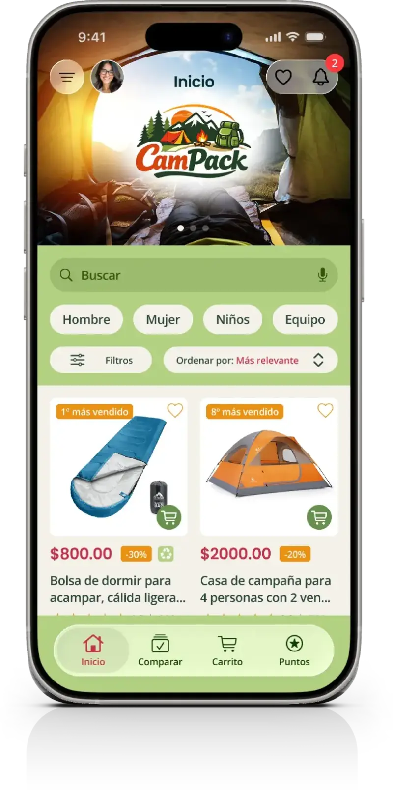
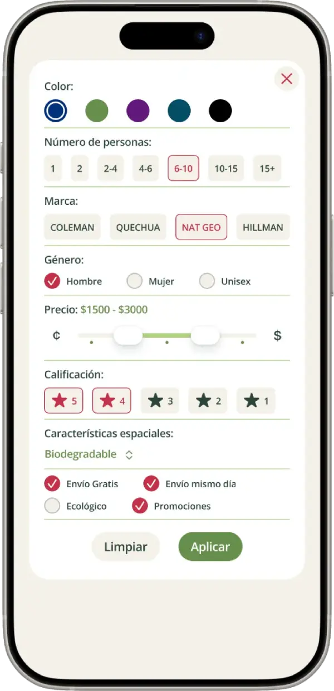
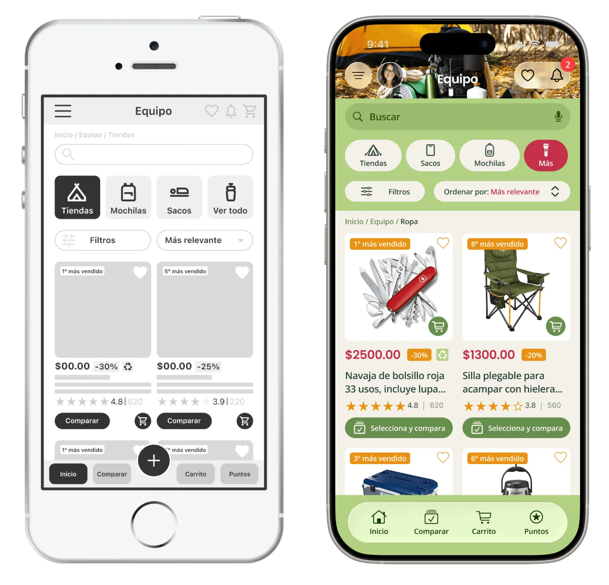

Problema
Los usuarios tienen dificultades para encontrar productos adecuados a sus necesidades, lo que genera confusión y dificulta la decisión de compra.

Diseño UX enfocado en facilitar la búsqueda, comparación y compra de productos de camping.
Los usuarios tienen dificultades para encontrar productos adecuados a sus necesidades, lo que genera confusión y dificulta la decisión de compra.
Diseñar una experiencia más clara y simple que facilite la búsqueda, comparación y selección de productos.
Cada tipo de usuario busca cosas distintas, por lo que un catálogo genérico no facilita la decisión de compra.
Se identificaron 4 perfiles principales con diferentes necesidades de espacio, comodidad y portabilidad.
Se creó un sistema de filtros por tipo de usuario para facilitar la búsqueda y mostrar productos más relevantes.

Segmentar la experiencia por tipo de usuario en lugar de mantener un catálogo genérico.
Proceso visual desde la estructura inicial hasta la interfaz final.
Flujo principal: explorar → filtrar → comparar → comprar
El flujo fue diseñado para facilitar la exploración de productos y ayudar al usuario a decidir más rápido.
Ver prototipo de baja fidelidadLas pruebas mostraron confusión al comparar productos, dificultad con los filtros y problemas de navegación. Simplificamos la interfaz y reorganizamos el contenido.

Se mejoró la navegación, los filtros y la organización de la información para facilitar la elección de productos.
La interfaz facilita la búsqueda y comparación de productos mostrando primero la información más importante.
Ver prototipo de alta fidelidadSe diseñó una herramienta para comparar productos de forma clara y facilitar la toma de decisiones.

Facilitando la toma de decisiones
Se agregó un sistema de puntos para incentivar futuras compras y mejorar la experiencia después de la compra.
Este enfoque retoma principios de programas de lealtad aplicados al eCommerce.

El sistema de puntos refuerza la satisfacción post-compra y fomenta la lealtad.
La solución transformó un catálogo genérico en una experiencia orientada a las necesidades de cada usuario.
Ahora puede explorar productos, aplicar filtros y comparar opciones con menor esfuerzo.
La propuesta fue refinada a partir de las pruebas de usabilidad.
Entender las necesidades reales de los usuarios ayudó a crear una experiencia más clara, simple y fácil de usar.
Este proyecto fue posible gracias a las personas que participaron en las entrevistas y pruebas de usabilidad. Su retroalimentación ayudó a mejorar la experiencia en cada iteración.
Para proteger la privacidad de las personas participantes, sus nombres se presentan mediante alias.
Participar en las pruebas de usabilidad fue una gran experiencia. Me gustó ver cómo cada iteración mejoró la aplicación y la hizo más intuitiva. Se nota el cuidado que hubo para escuchar la retroalimentación y convertirla en mejoras reales.
Me sorprendió descubrir todo lo que eres capaz de hacer. Gracias por invitarme a formar parte de este proyecto. Fue muy interesante conocer el proceso y ver cómo una idea se convirtió en una aplicación bien pensada y fácil de usar.